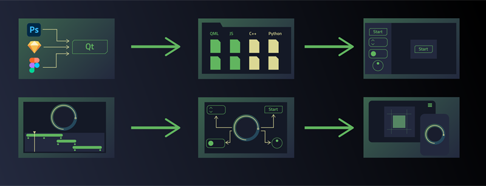

Asset Creation with Other Tools
Typically, you as a designer would like to use specialized UI design tools, such as Adobe Photoshop, Sketch, Figma, Blender, or Maya, and then send the design to a developer for functionality implementation. Here you can use the Qt Bridge export tool to convert 2D or 3D assets for Qt Design Studio.
You can import the assets into Qt Design Studio. There you can also edit them more if needed. You can then submit the UI to the developer for adding further functionality to the application.
The following image describes the workflow in a basic way using Qt Bridge for Adobe Photoshop and Qt Design Studio:

The workflow consists of the following steps:
- Export your design from a design tool into a metadata format supported by Qt Design Studio.
- Create a project in Qt Design Studio and import the metadata file to it.
- Edit the imported components and create more components in the 2D and 3D view.
- Animate your design in Transitions or Timeline and Curves.
- Create interactions in States and Connections.
- Preview your design in real time, on the desktop or on a mobile or an embedded device.
For more information, watch a video that shows how to perform the tasks above:
- Exporting from Design Tools
Export designs containing 2D and 3D assets into a metadata format that you can import to projects in Qt Design Studio.
- Importing Designs
Import assets that you exported from design tools to a Qt Design Studio project and edit them in the Design mode to create a UI.